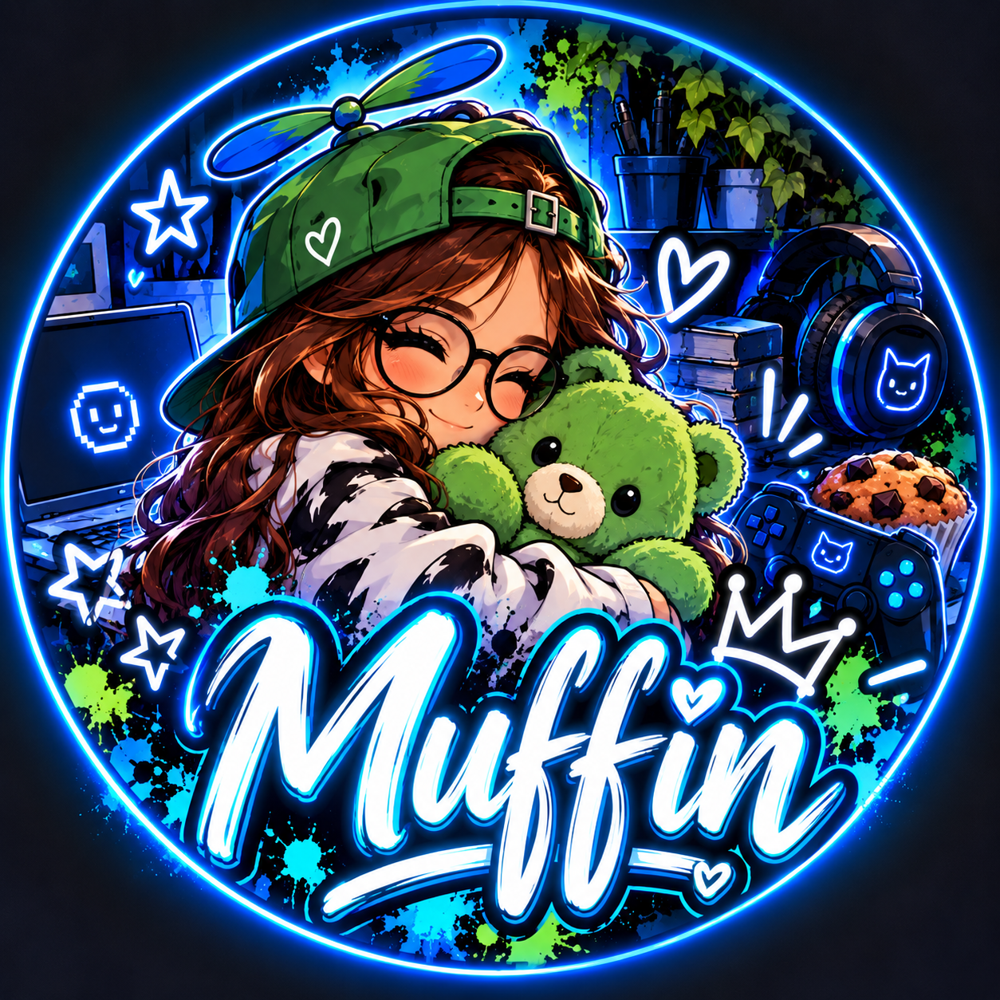

PARTIE 05 · INTERVIEW
Affrontement du
jugement d’autrui
Le jugement d’une personne ne prend tout son sens qu’une fois confronté à mon propre regard.
Son regard. Mes réactions. Une conversation entre nous.

MuffinMa meilleure amie 💙
VERSION PROVISOIRE · Réponses de mon amie à venir
Dossier Moi · Notre échange
Fais défiler avec la molette, la barre de défilement ou ton doigt.
Toute la conversation est là, à lire à ton rythme.